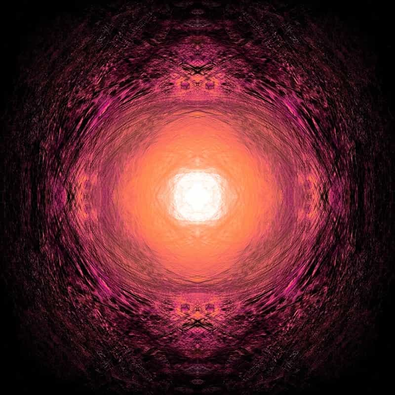

About Me
Hello everyone this is Biswajit Nayak.I am currently persuing my B.Tech in the branch of Information Technology and am in first year.I am a resident of Jajpur.I have done my schooling from Gurukul Public schooling and intermediate from Vikash Residential School.It was quite a wonderful journey all starting from scratch.Ups and Downs have been a frequent part of the whole story and it is no wrong in facing them too as the situations bring the best in us and we must be ready enough to adore them with all our might and main.I just hope that I shall be able to get upto my expectations within these four years and make each and every brightful memory I can adhering to every kind of situation regardless of its obstacles.
My Interests
There are not much things to add to my interests but all those things which seems to me in a unique attire never fail to grab my attraction. Well, I love to explore food items and I am keen viewer of all kinds of street food vlogs.I also have a keen interest towards animation series and comics:Champak,Tinkle,Chandamama,Ben 10,Tom and Jerry are just enough to glorify the list.Top of the all I love natural sights and sceneries.They are just a constant source of relaxation and no matter how harsh the situation is they always make me heave a sigh of relief. Talking about seasons,winter season undoubtedly stands to be my favourite season cause I get no beautiful sleep than in a wintry night.Squeezing up inside a quilt and grabbing a pillow by the sidea are just enough to sail one smoothly through the long night. Eventually I love exploring things and try my best to enjoy every moment.
My Skills
 Briefing about my skills,I have been learning to code since my intermedate and I have a good hand in C++ and C.I know a little bit of Java though I am not so fluent as in the other two.I got introduced to web development through this task only and I am completely a newbie in this field and I am trying to learn as much as I can in this short span of time.I love algorithms and optimised approaches and am still in the learning process.Being non-technical,I know a little bit of cooking credits of whose go to mother.I can joke out of any topic even the serious ones.Besides at times I impart motivation and philosophical thoughts to my friends and thats a different thing that I fail to implement all those in myself at the time of need.So this was all I could get exploring myself.
List of my hobbies
- listening to music
- watching thillers and fictions
- reading comics and stories
- trying out all types of games